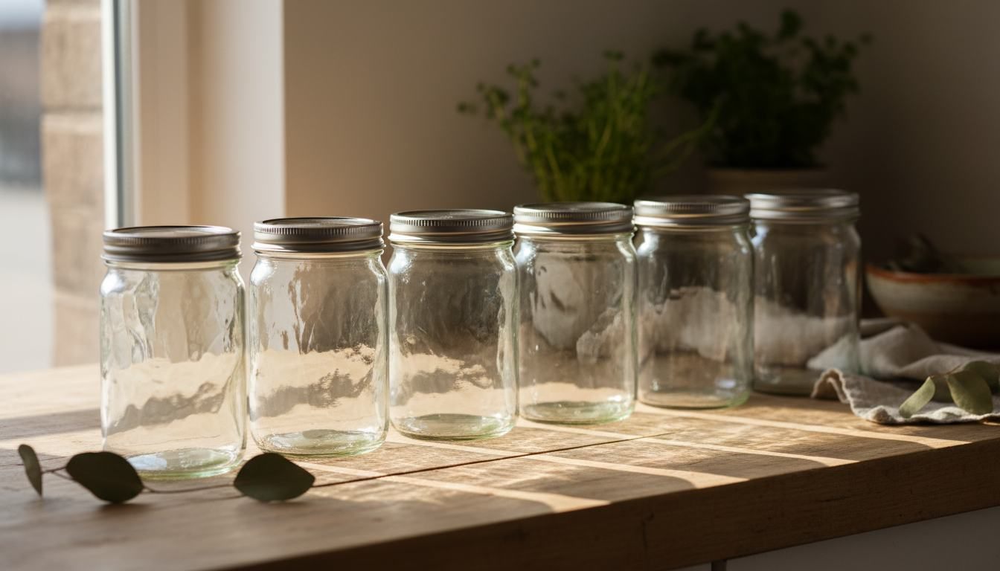
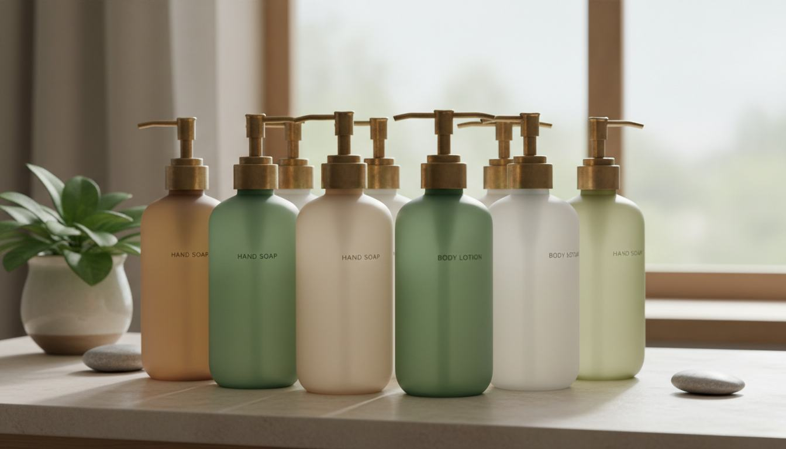
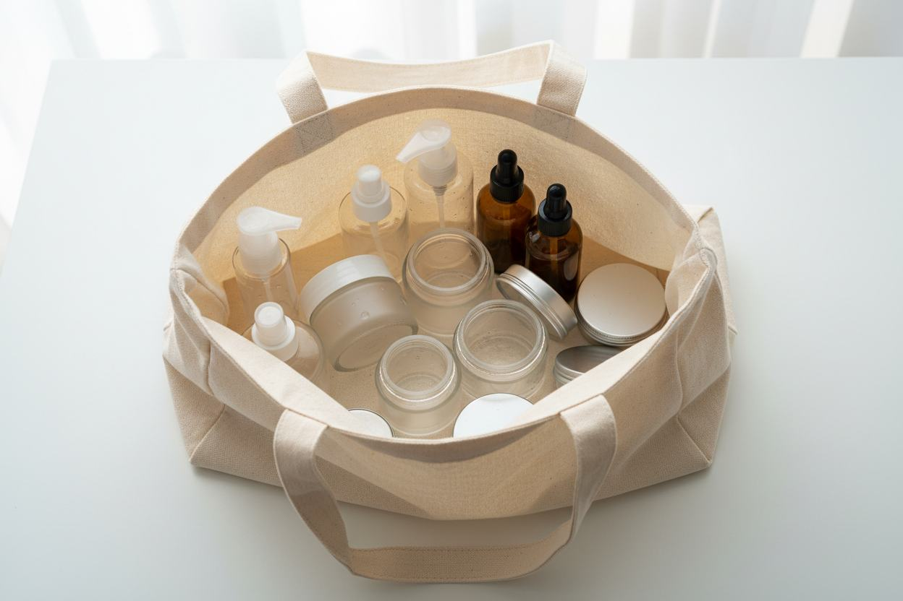
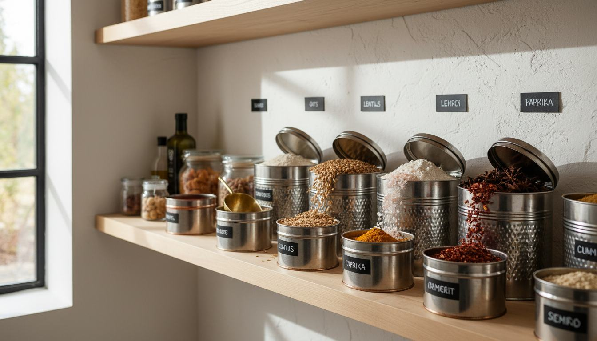
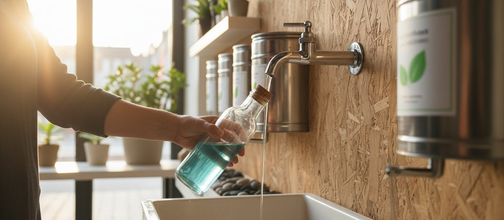

Glass Jars & Bottles
Best for: Oils, Vinegars, Condiments & LiquidsMake sure they are fully washed and boiled to sterilize, especially if refilling condiments.
Transitioning to a packaging-free lifestyle is simpler than you think. Learn how to pre-wash your containers, understand tare weights, and confidently navigate your first local eco-station.
To make your refilling trip smooth and hygienic, build these simple preparation micro-habits before heading out.

You don't need fancy, designer jars. Any clean, sanitized vessel you already own can serve as the perfect tool to start your eco-refill transition.

Make sure they are fully washed and boiled to sterilize, especially if refilling condiments.

Pump clean water through the nozzle multiple times to clear out dried soap residue completely.

Line with clean parchment paper if refilling salts or organic bath scrubs to prevent rust.
Follow eco-advocate Beatrice as she visits a neighborhood refilling sari-sari store and explains the entire step-by-step process on camera.
